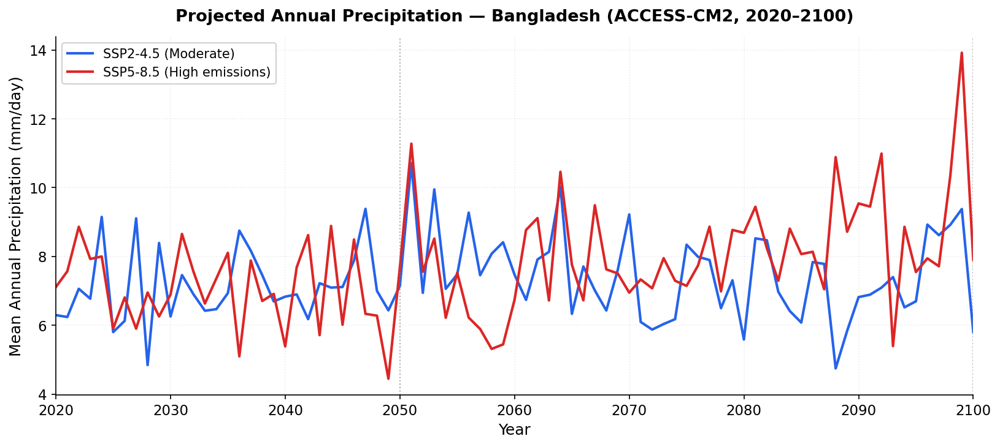
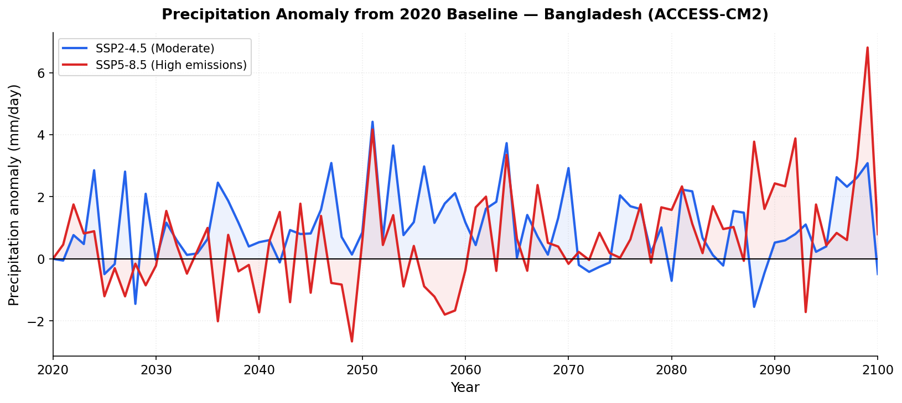
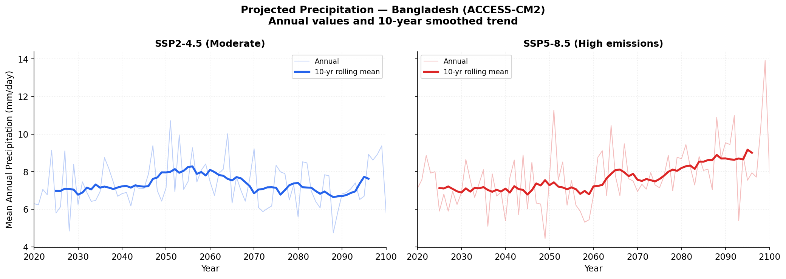
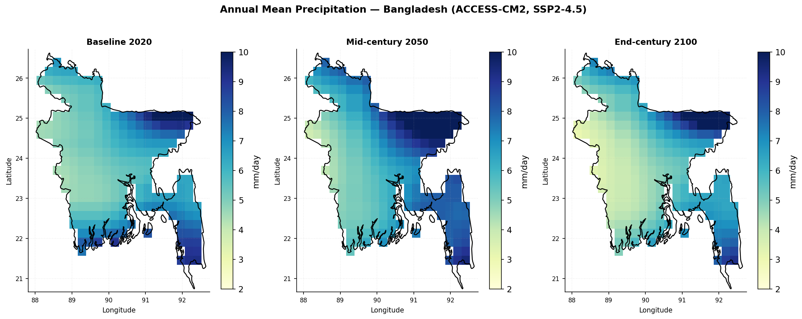
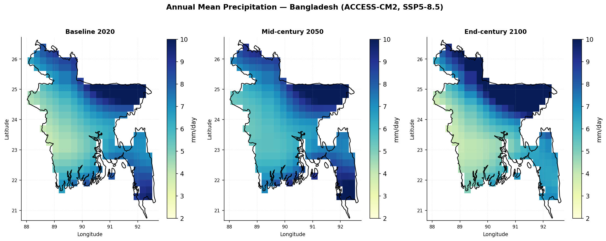
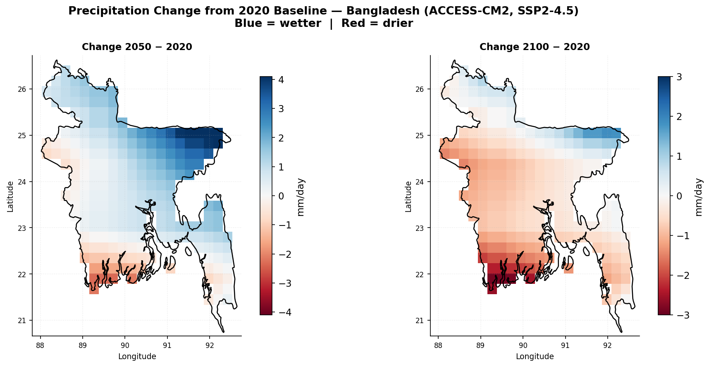
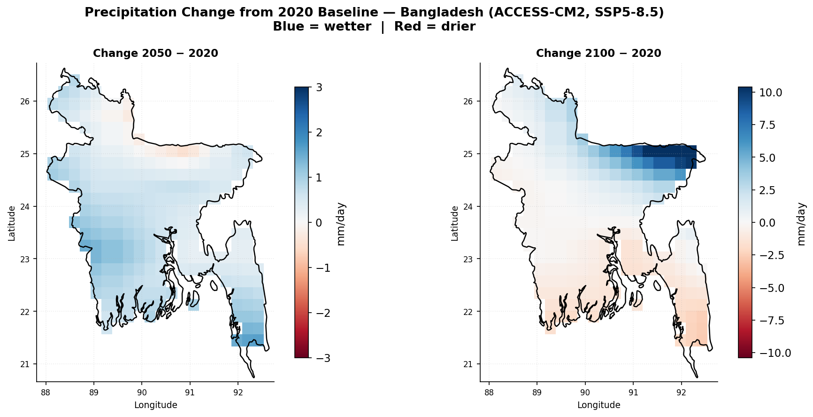

Projected Precipitation Changes in Bangladesh (2020–2100)
1. Introduction
Bangladesh is one of the most climate-vulnerable countries in the world, situated at the confluence of three major river systems — the Ganges, Brahmaputra, and Meghna — and exposed to the Bay of Bengal in the south. The country’s geography makes it acutely sensitive to changes in precipitation patterns, which directly govern flood frequency, drought risk, groundwater recharge, agricultural productivity, and the transmission dynamics of climate-sensitive diseases such as dengue fever.
Precipitation in Bangladesh is heavily monsoon-driven, with approximately 70–80% of annual rainfall concentrated between June and September. Even moderate changes in the intensity, timing, or spatial distribution of monsoon precipitation can have disproportionate consequences for a densely populated delta nation with limited adaptive capacity. Under ongoing anthropogenic climate change, the South Asian monsoon system is projected to intensify, yet with significant regional heterogeneity and inter-model uncertainty.
This study uses the NASA Earth Exchange Global Daily Downscaled Projections (NEX-GDDP-CMIP6) dataset to analyse projected changes in mean annual precipitation across Bangladesh from 2020 to 2100 under two contrasting greenhouse gas emission scenarios: SSP2-4.5 (moderate mitigation) and SSP5-8.5 (high emissions). The ACCESS-CM2 global climate model was selected on the basis of its demonstrated superior performance for Bangladesh among the full CMIP6 ensemble, as established by Talukder et al. (2025) using a multi-criteria model evaluation framework. By examining both the national mean time series and the spatial distribution of projected changes, this analysis aims to characterise the trajectory and spatial pattern of future precipitation risk across Bangladesh under two plausible climate futures.
2. Data and Methods
- Data: NASA NEX-GDDP-CMIP6 via Google Earth Engine (
NASA/GDDP-CMIP6) - Model: ACCESS-CM2 — selected as the top-performing CMIP6 model for Bangladesh based on Talukder et al. (2025), who evaluated 19 GCMs against ERA5 reanalysis using seven error metrics including Kling-Gupta Efficiency
- Scenarios: SSP2-4.5 (moderate emissions, radiative forcing 4.5 W/m² by 2100) and SSP5-8.5 (high emissions, radiative forcing 8.5 W/m² by 2100)
- Variable: Near-surface precipitation rate (
pr) — converted from kg/m²/s to mm/day by multiplying by 86,400 (seconds per day) - Period: 2020–2100 (81 annual means)
- Spatial resolution: 0.25° × 0.25° (~25 km), clipped to Bangladesh national boundary
- Processing pipeline: Google Earth Engine → Google Drive → Python → Quarto
Area-averaged national mean precipitation was computed by spatial averaging over the dissolved Bangladesh boundary geometry at 25 km resolution. Precipitation anomalies were calculated relative to the 2020 baseline value for each scenario. Spatial difference maps show pixel-wise subtraction of the 2020 annual mean from the 2050 and 2100 annual means.
3. Results
3.1 Projected Annual Precipitation (2020–2100)

Annual mean precipitation across Bangladesh shows high interannual variability throughout the projection period under both scenarios, consistent with the region’s monsoon-dominated climate. Under SSP2-4.5, the national mean precipitation starts at 6.30 mm/day in 2020, rises to 7.14 mm/day by 2050, then declines to 5.81 mm/day by 2100 — a net change of −0.49 mm/day relative to the 2020 baseline. This suggests that under moderate emissions, precipitation increases through mid-century before exhibiting a gradual reduction in the latter half of the century.
Under SSP5-8.5, the trajectory is markedly different. Precipitation begins at 7.11 mm/day in 2020, increases to 7.69 mm/day by 2050, and continues rising to 7.90 mm/day by 2100 — a net increase of +0.79 mm/day over the full period. The high-emissions scenario thus projects a sustained intensification of precipitation through the end of the century, consistent with thermodynamic amplification of the monsoon under greater greenhouse gas forcing. Both scenarios exhibit substantial year-to-year variability, with annual values ranging from approximately 4.4 to 13.9 mm/day across the 81-year period.
3.2 Precipitation Anomaly from 2020 Baseline

The anomaly time series clarifies the direction and magnitude of change relative to the 2020 starting point. Under SSP2-4.5, anomalies fluctuate predominantly in positive territory during the 2020–2070 period, reaching a peak positive anomaly of approximately +4.42 mm/day in 2051, before returning toward and below zero in the 2080s–2100s. The largest negative anomaly under SSP2-4.5 occurs in 2088 at −1.55 mm/day, indicating that some years in the late century will be notably drier than the 2020 baseline.
Under SSP5-8.5, the pattern shows greater volatility, with large positive and negative excursions throughout, but an overall positive tendency that becomes more pronounced after 2070. The largest negative anomaly under SSP5-8.5 occurs in 2049 at −2.66 mm/day — a notably dry year at mid-century. The largest positive anomaly under SSP5-8.5 reaches +6.81 mm/day in 2099, reflecting the strong late-century intensification under the high-emissions pathway.
Notably, both scenarios show periods of negative anomaly — years drier than the 2020 baseline — highlighting that future precipitation change is not monotonic and that drought risk may co-exist with overall wetting trends depending on the decade and scenario considered.
3.3 Scenario Comparison with 10-Year Smoothed Trend

The 10-year rolling mean smooths interannual noise and reveals the underlying long-term signal in each scenario. Under SSP2-4.5, the smoothed trend shows a modest increase from approximately 7.0 mm/day in the 2020s to around 7.8 mm/day by mid-century, followed by a gradual decline back toward 7.1 mm/day by the early 2090s. The trajectory is relatively flat, indicating limited long-term directional change under moderate emissions.
Under SSP5-8.5, the smoothed trend tells a clearly different story. Starting near 7.1 mm/day, the rolling mean rises steadily and consistently throughout the projection period, reaching approximately 8.8 mm/day by the 2090s. This represents a sustained increase of approximately 1.7 mm/day relative to the early-century baseline — a change with significant implications for monsoon flood intensity, riverine discharge, and coastal inundation risk in Bangladesh.
3.4 Spatial Distribution — SSP2-4.5

The spatial maps reveal pronounced heterogeneity in precipitation distribution across Bangladesh. In the 2020 baseline, precipitation is highest in the north-east and east of the country — including Sylhet and Chittagong divisions — where values exceed 9–10 mm/day, consistent with the orographic enhancement of rainfall from the Bay of Bengal moisture plume interacting with the hills of northeastern Bangladesh and Meghalaya. The south-central and western regions show lower values of 4–6 mm/day.
By 2050 under SSP2-4.5, the north-eastern wet region expands and intensifies, with precipitation exceeding 9–10 mm/day across a broader area. The central and southern regions maintain moderate values. By 2100, the spatial pattern shifts noticeably — the north-east remains wetter but the south and south-west become drier, consistent with the national mean decline observed in the time series. The Sundarbans coastal belt in the south-west, already one of the drier parts of Bangladesh, shows values approaching 2–3 mm/day by 2100 under this scenario.
3.5 Spatial Distribution — SSP5-8.5

The spatial pattern under SSP5-8.5 at the 2020 baseline is broadly similar to SSP2-4.5, with the north-east displaying the highest precipitation values. However, by 2050, the intensification of the north-eastern wet zone is more pronounced than under SSP2-4.5, with the dark blue band (≥9–10 mm/day) extending further into the north-central region. By 2100 under SSP5-8.5, the north-east reaches the maximum of the colour scale (>10 mm/day), indicating a substantial increase in precipitation in that region. The contrast between the wet north and the relatively dry south is amplified under high emissions, suggesting increasing spatial polarisation of precipitation across Bangladesh over the course of the century.
3.6 Precipitation Change Maps — SSP2-4.5

The spatial difference maps quantify where precipitation increases or decreases relative to 2020. Under SSP2-4.5 by 2050, the northern and north-eastern regions show the largest increases, with some areas gaining up to +3–4 mm/day relative to 2020. However, the southern coastal belt — including the Sundarbans region and parts of Barisal and Chittagong coastal areas — shows decreases of −2 to −4 mm/day, indicating significant drying in these areas by mid-century.
By 2100 under SSP2-4.5, the pattern reverses across most of the country. The majority of Bangladesh shows negative anomalies of −1 to −3 mm/day, meaning annual precipitation has declined below the 2020 baseline. The north-east is the only region maintaining slight positive values. This end-century drying under moderate emissions is concerning for water security, particularly for the agriculturally important western and central regions.
3.7 Precipitation Change Maps — SSP5-8.5

Under SSP5-8.5 by 2050, the spatial pattern of change is broadly positive across northern Bangladesh, with increases of +1 to +3 mm/day, while the south remains near-neutral or slightly negative. By 2100 under SSP5-8.5, an extreme spatial divergence emerges. The north-east of the country shows precipitation increases of up to +7.5 to +10 mm/day above the 2020 baseline — a dramatic amplification of monsoon precipitation in the Sylhet region that could substantially increase flood risk in an already flood-prone area. In contrast, the southern coastal belt and parts of central Bangladesh show declines of −5 to −10 mm/day, representing severe drying. This strong north-south gradient under high emissions signals a potentially critical future water security divide within Bangladesh — the north experiencing intensifying floods while the south faces increasing drought and reduced freshwater availability.
4. Discussion
This analysis demonstrates that projected precipitation changes in Bangladesh are highly scenario-dependent, spatially heterogeneous, and non-monotonic over the 2020–2100 period. Under the moderate SSP2-4.5 pathway, precipitation increases through mid-century but then declines below the 2020 baseline by 2100, particularly across the south and west of the country. Under the high-emissions SSP5-8.5 pathway, national mean precipitation increases throughout the century, but this aggregate signal conceals a deepening spatial divide between an increasingly wet north-east and a drying southern coastal zone.
The projected intensification of precipitation in the north-east under SSP5-8.5 is consistent with thermodynamic arguments for a wetter monsoon under greater atmospheric moisture loading — the Clausius-Clapeyron relationship suggests approximately 7% increase in atmospheric water vapour per degree of warming. The Sylhet and Chittagong hill tracts regions, which already receive some of the highest rainfall in South Asia due to orographic forcing, appear particularly susceptible to further intensification. Enhanced precipitation in these catchments feeds directly into the Surma-Meghna river system and could substantially amplify peak flood discharge, threatening millions of people in the lower Brahmaputra-Meghna floodplain.
Conversely, the projected drying of southern Bangladesh — most severe under SSP5-8.5 by 2100 — raises serious concerns for the Sundarbans delta, freshwater availability in coastal communities, and saltwater intrusion into agricultural land. The Sundarbans mangrove ecosystem, already under pressure from sea-level rise and cyclone intensification, would face additional stress from reduced freshwater input from the north.
From a public health perspective, changing precipitation patterns have direct implications for dengue fever transmission in Bangladesh. Monsoon precipitation drives Aedes mosquito breeding through the accumulation of standing water. An intensifying and more variable precipitation regime — with heavier bursts but also longer dry intervals — may create intermittent pools conducive to Aedes proliferation, potentially extending dengue transmission seasons into previously lower-risk periods. The spatial heterogeneity identified in this study suggests that district-level dengue risk modelling should incorporate precipitation projections rather than relying on national averages.
It is important to acknowledge the limitations of this single-model analysis. Although ACCESS-CM2 performs well for Bangladesh in multi-model evaluations, individual GCM projections carry substantial uncertainty, particularly regarding the magnitude of precipitation change in monsoon regions. Future work should incorporate a multi-model ensemble using the other top-performing models for Bangladesh (MRI-ESM2-0 and UKESM1-0-LL) to better characterise projection uncertainty. Additionally, this analysis uses annual mean precipitation; seasonal disaggregation — particularly examining monsoon (JJAS) versus dry season (ONDJ) changes separately — would yield more actionable insights for flood and drought risk management.
5. Conclusion
This study analysed projected changes in annual mean precipitation across Bangladesh from 2020 to 2100 using the ACCESS-CM2 model from NASA NEX-GDDP-CMIP6 under SSP2-4.5 and SSP5-8.5. Key findings are:
- Under SSP2-4.5, national mean precipitation increases by +0.85 mm/day by 2050 relative to 2020, but then declines to −0.49 mm/day below baseline by 2100, with widespread drying across southern and western Bangladesh in the late century.
- Under SSP5-8.5, precipitation increases consistently throughout the century, reaching +0.79 mm/day above baseline by 2100 at the national scale, but with extreme spatial divergence — the north-east becomes significantly wetter (up to +10 mm/day) while the south becomes substantially drier (up to −10 mm/day) by end-century.
- The driest individual year occurs in 2049 under SSP5-8.5 (4.45 mm/day) and 2088 under SSP2-4.5 (4.75 mm/day), confirming persistent drought risk even in wetter long-term scenarios.
- Both scenarios show high interannual variability, confirming that Bangladesh will continue to face both flood and drought risks within individual years regardless of the long-term trend.
- Spatial patterns indicate that the north-east and south of Bangladesh will experience contrasting futures, with critical implications for flood risk management, water security, agriculture, coastal ecosystems, and climate-sensitive disease transmission.
These findings underscore the urgency of scenario-specific, spatially disaggregated climate adaptation planning for Bangladesh — one of the nations least responsible for but most exposed to the consequences of global climate change.
6. Data
Raw CSV data and figures are available in the repository under /data and /figures respectively.
References
Talukder, A., Shaid, S., Hwang, S., Alam, E., Islam, K., & Kamruzzaman, M. (2025). Optimizing the multi-model ensemble of CMIP6 GCMs for climate simulation over Bangladesh. Scientific Reports, 15, 11343. https://doi.org/10.1038/s41598-025-96446-0
Thrasher, B., Wang, W., Michaelis, A. et al. (2022). NASA Global Daily Downscaled Projections, CMIP6. Scientific Data, 9, 262. https://doi.org/10.1038/s41597-022-01393-4
IPCC. (2021). Climate Change 2021: The Physical Science Basis. Contribution of Working Group I to the Sixth Assessment Report. Cambridge University Press. https://doi.org/10.1017/9781009157896